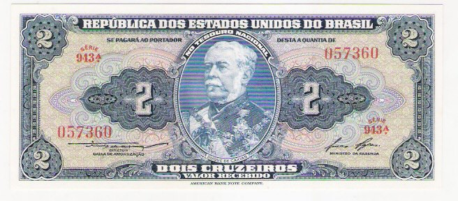

2 Cruzeiros
Duque de Caxias
| Num |
Autógrafos e Chancelas |
Data |
Séries |
Tipo |
| C014 |
Autografada |
1944 |
001/500 |
Valor Recebido |
| C015 |
Claudionor de Souza Lemos / Oswaldo Aranha |
1954 |
501/900 |
Valor Recebido |
| C016* |
Claudionor de Souza Lemos / Lucas Lopes |
1958 |
901/1135 |
Valor Recebido |

Estampa:Anverso: Duque de Caxias (Luís Alves de Lima e Silva)
Reverso: Escola Militar de Resende - RJ
Cores:Anverso: Azul e policromia
Reverso: Laranja
Dimensões Básicas: 157mmx67mm
Imagem da Coleção Particular de Artur Araripe, associado 2013/0005
| Num |
Autógrafos e Chancelas |
Data |
Séries |
Tipo |
| C061 |
Claudionor de Souza Lemos / Eugênio Gudin (laranja) |
1955 |
001/230 |
Valor Recebido |
| C062 |
Claudionor de Souza Lemos / Eugênio Gudin (ocre) |
1956 |
231/600 |
Valor Recebido |
| C063 |
Claudionor de Souza Lemos / José Maria Alkimin |
1956 |
601/900 |
Valor Recebido |
| C064 |
Claudionor de Souza Lemos / Lucas Lopes |
1958 |
901/1045 |
Valor Recebido |
Estampa:Anverso: Duque de Caxias (Luís Alves de Lima e Silva)
Reverso: Escola Militar de Resende - RJ
Cores:Anverso: Verde e policromia
Reverso: Laranja / Ocre (Série 231/600)
Dimensões Básicas: 157mmx67mm
As imagens foram retiradas do livro "Cédulas Brasileiras de 1942 à 1991" e podem estar sobre copyright. Estão sendo aqui usadas como ferramenta de consulta.
Website desenvolvido em HTML 5, a linguagem do futuro! Feito em Adobe ™ Dreamweaver ® CS 5.5